01
포항 도착, 여행 시작!
여객선터미널 집결·선표 수령·승선수속까지 가이드가 챙겨드려요.
10월 8일(목)~10일(토), 동해 끝 독도까지
또래 20명과 함께하는 울릉도 2박
3일
포항 도착하시면, 그다음부터는 저희가 다 함께할게요
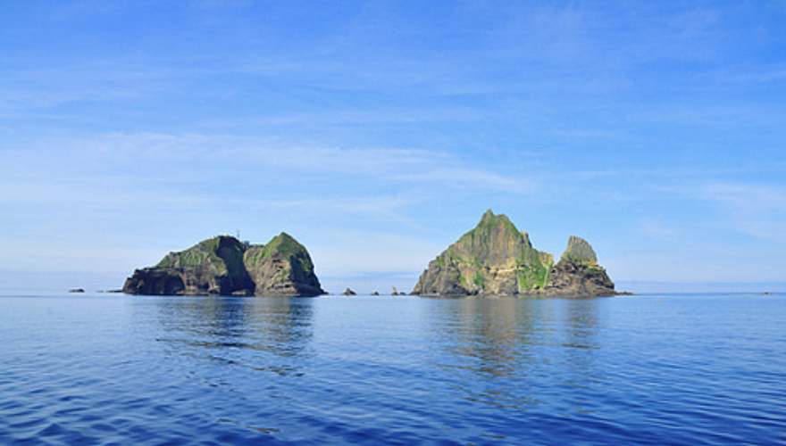
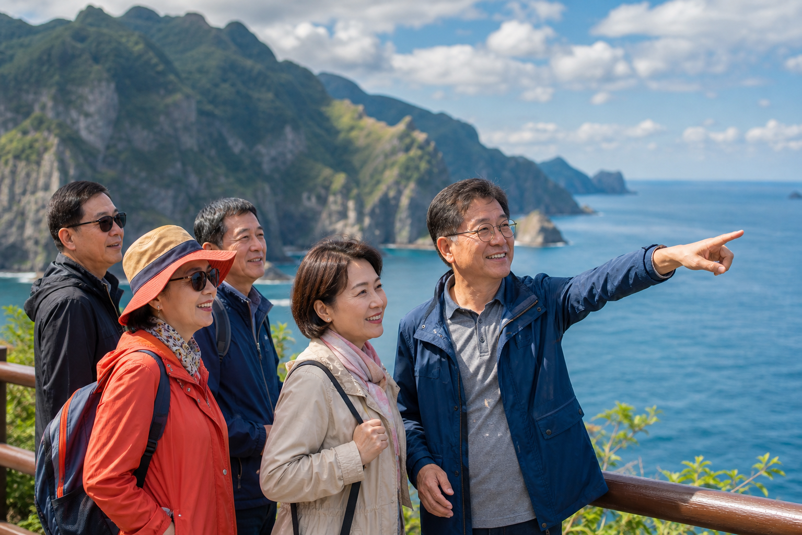
2026년 10월 8일~10일
사진으로만 보던 독도를 직접 마주하고,
좋은 분들과 동해 끝에서 함께한 시간.
걱정 없이, 오롯이 여행에만 집중하시면 돼요.
이런 마음, 있으셨죠
“독도는 한번은 가고 싶은데, 혼자는 영 그래요.”
“배편에 일정에, 챙길 게 많아 엄두가 안 나요.”
“편안한 또래분들과 조용히 다녀오고 싶어요.”
준비는 저희가 다 할게요
여객선터미널 집결·선표 수령·승선수속까지 가이드가 챙겨드려요.
비슷한 나이대 20명. 낯설지 않게, 가이드가 함께해요.
섬이지만 호텔급 2박. 예약도 자리 배정도 저희가 미리 준비했어요.
첫날 저녁, 시놀 회원만의 네트워킹 나이트. 대화가 자연스럽게 이어지도록 자리를 마련해요.
일반 여행상품과 비교해 보세요
여행 중 추가 비용과 불편을 줄일 수 있도록
좌석부터 숙소, 식사와 보험까지
꼼꼼하게 준비했습니다.
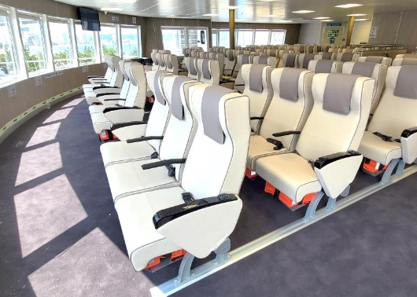
왕복 쾌속선 좌석을 더 편안한 비즈니스석으로 준비했습니다.
별도로 가입해야 하는 경우가 많은 여행자보험까지 포함했습니다.
상품가 외에 추가되기 쉬운 유류할증료까지 포함했습니다.
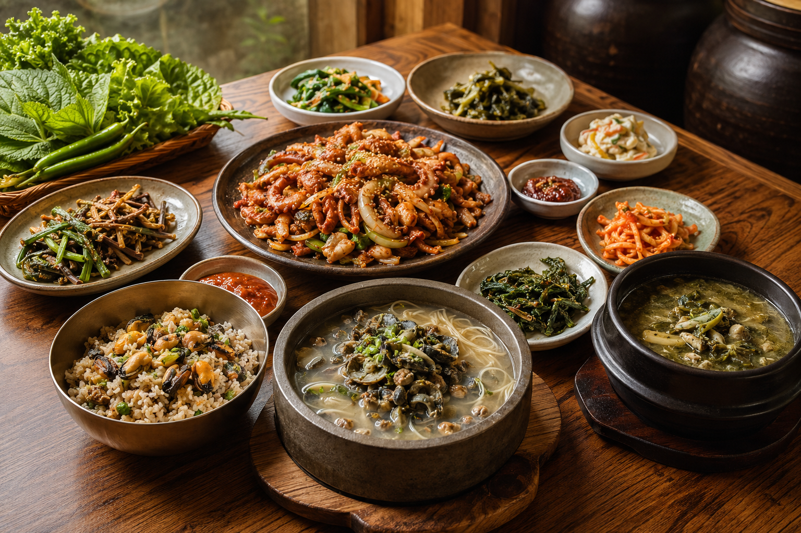
일반적인 4식 구성보다 넉넉하게, 울릉도 제철 특식 5식을 포함했습니다.
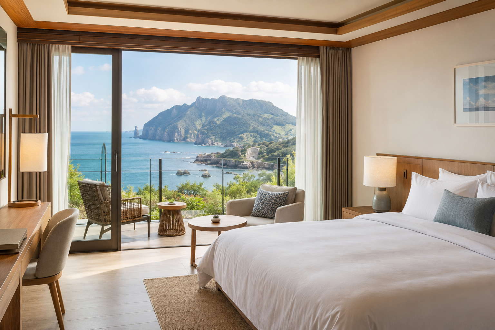
숙소 미정이 아닌 대아리조트 2박 확정 상품입니다.
이렇게 다녀와요
09:00
선표 수령·승선수속까지 진행자가 함께해요.
09:50
약 2시간 50분, 울릉도로 출발해요.
도착
현지 안내 미팅 후, 울릉도 첫 특식으로 시작해요.
14:00
도동·통구미·거북바위·나리분지 등, 약 4시간.
저녁
첫날 저녁, 시놀 회원끼리 편안하게.
조식
든든한 아침으로 하루를 시작해요.
오전
독도 입도. 기상 악화 시 선회관광으로 대체돼요.
중식
울릉도 산나물로 차린 제철 밥상.
14:00
저동 촛대바위·봉래폭포·관음도 등, 약 3시간.
저녁
원하는 곳에서 편하게 저녁 시간을 보내요.
오전
서두르지 않고 마지막 아침을 즐겨요.
중식
울릉도에서의 마지막 특식.
13:40
진행자와 함께 안전하게 승선해요.
14:20
좋은 기억과 함께 뭍으로 돌아와요.
※ 독도 접안 여부, 일정·식사 순서는 해상 날씨·현지 사정에 따라 바뀔 수 있어요.
배로 다가가 직접 접안하는 독도. 날씨가 허락하는 날엔 섬에 오르고, 파도가 높은 날엔 독도를 한 바퀴 도는 선회관광으로. 어느 쪽이든, 동해 끝에서 마주하는 그 순간.
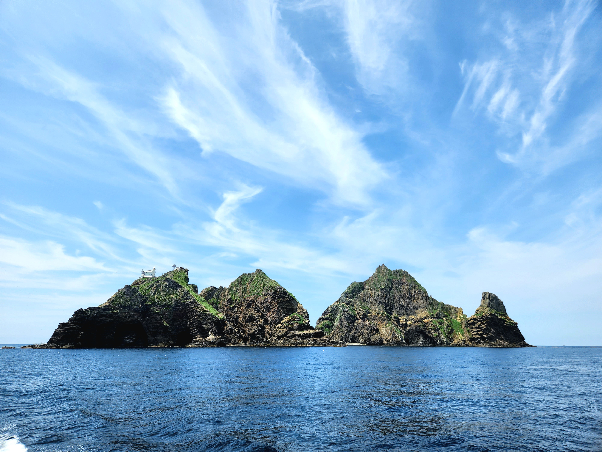
※ 독도 접안은 해상 날씨에 따라 입도 대신 선회관광으로 대체될 수 있어요.
타고 가는 쾌속선
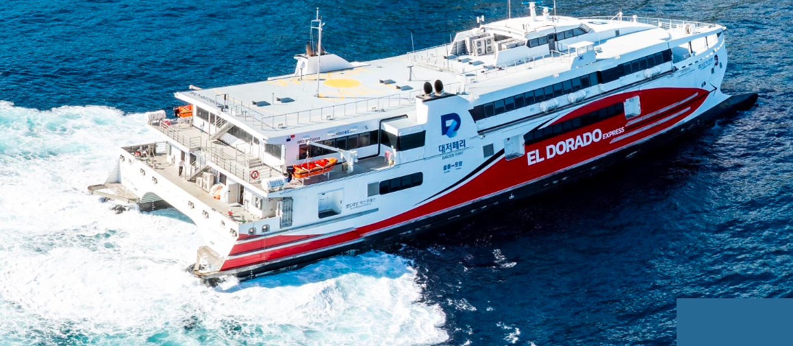
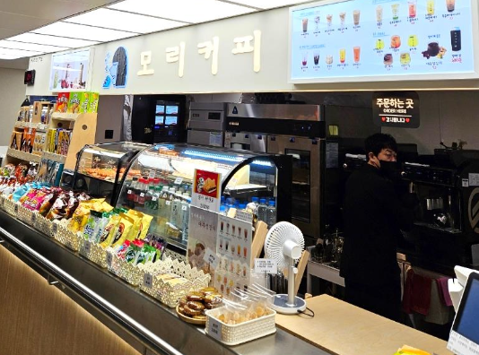
시놀 회원만의 저녁 자리
첫날 저녁, 좋은 분들과 둘러앉는 시놀 회원만의 자리. 어느 여행사도 못 만드는, 시놀만의 저녁이에요.
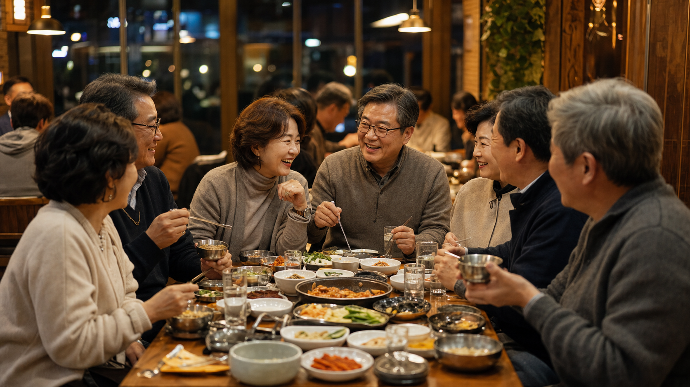
울릉도 제철 특식 · 특식 5식 포함
따개비칼국수, 오삼불고기, 엉겅퀴 해장국, 산채비빔밥, 홍합밥까지. 섬에서만 만나는 제철 밥상을 코스마다 챙겼어요.
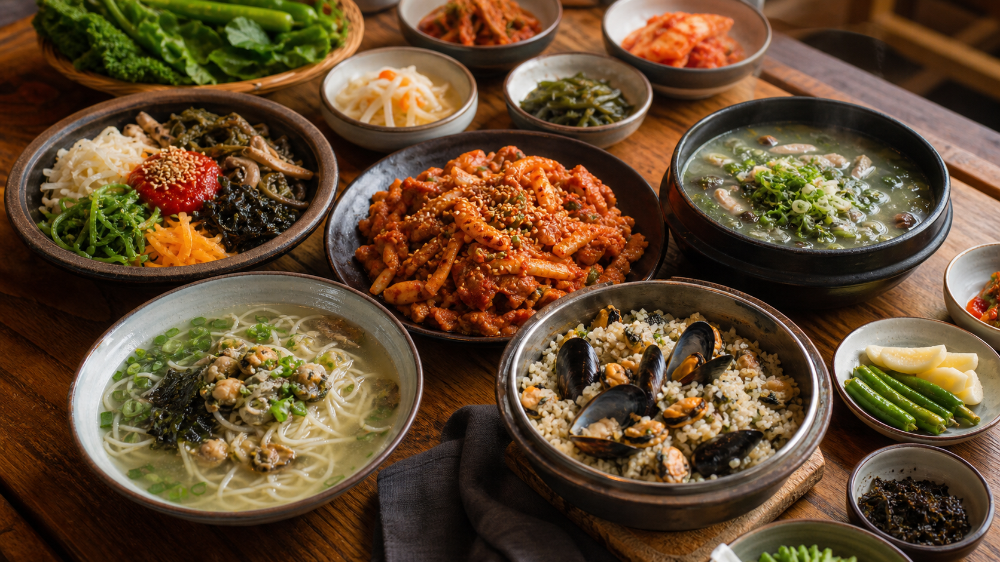
이 가격에, 이만큼 다
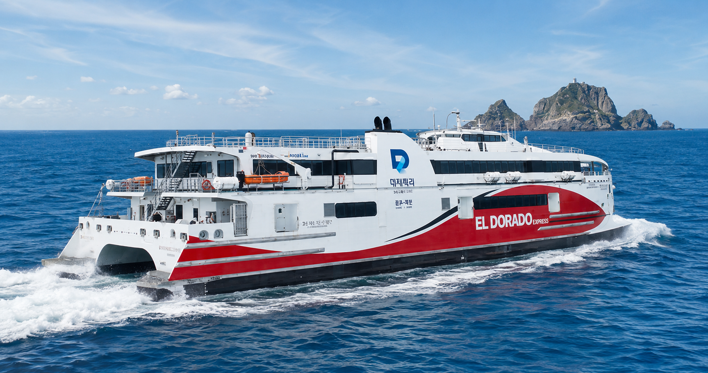
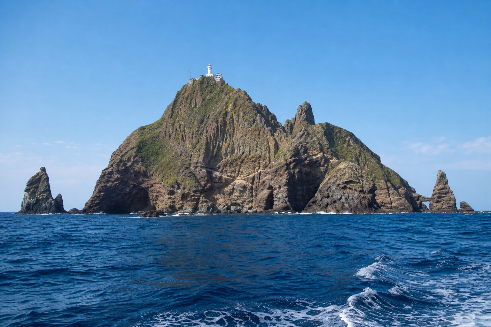
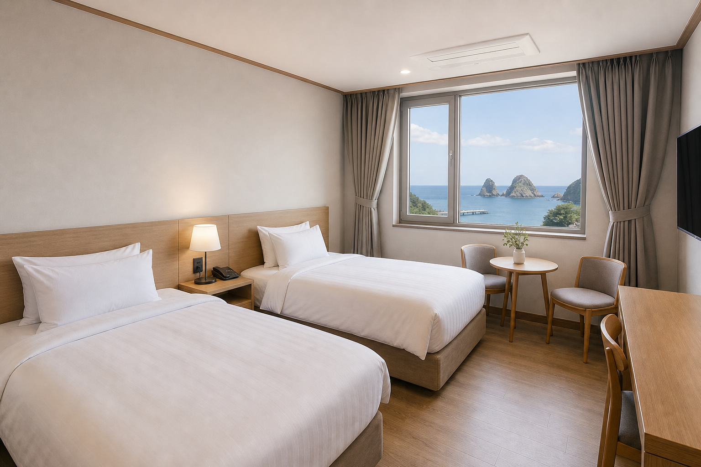
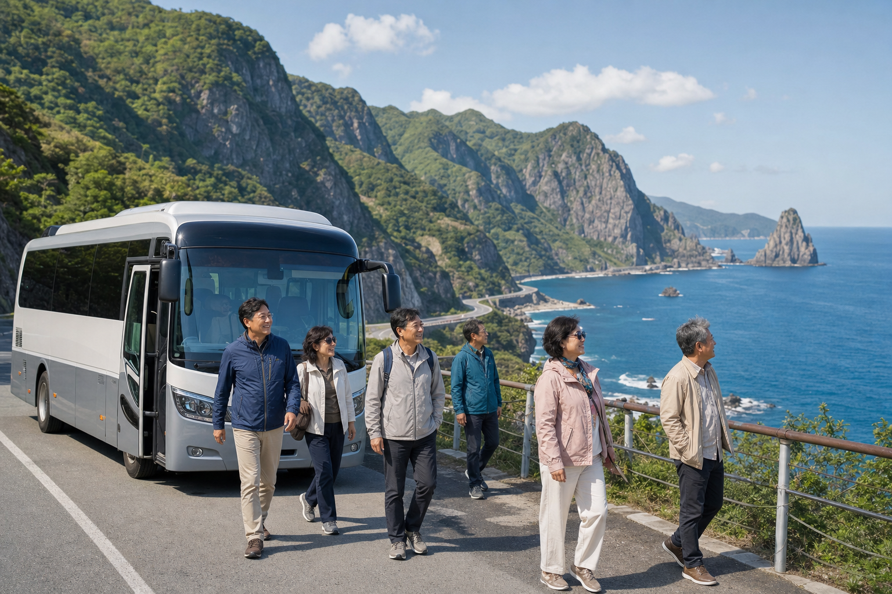
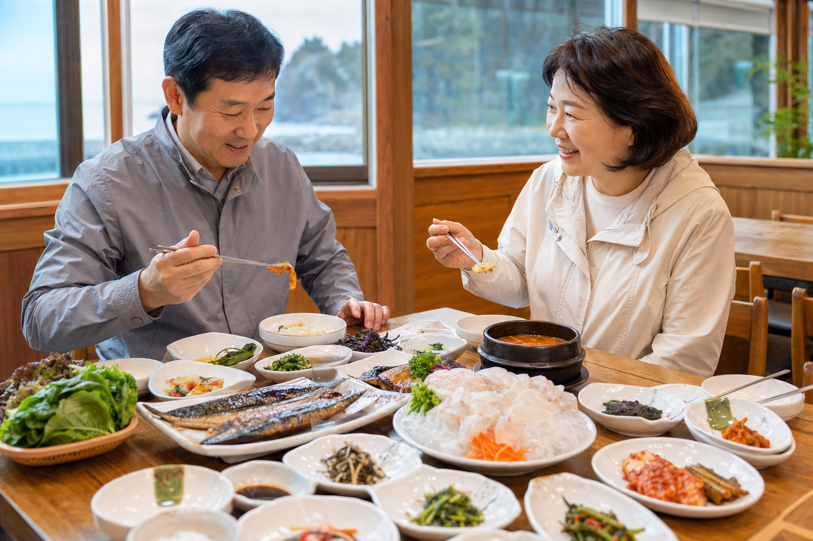
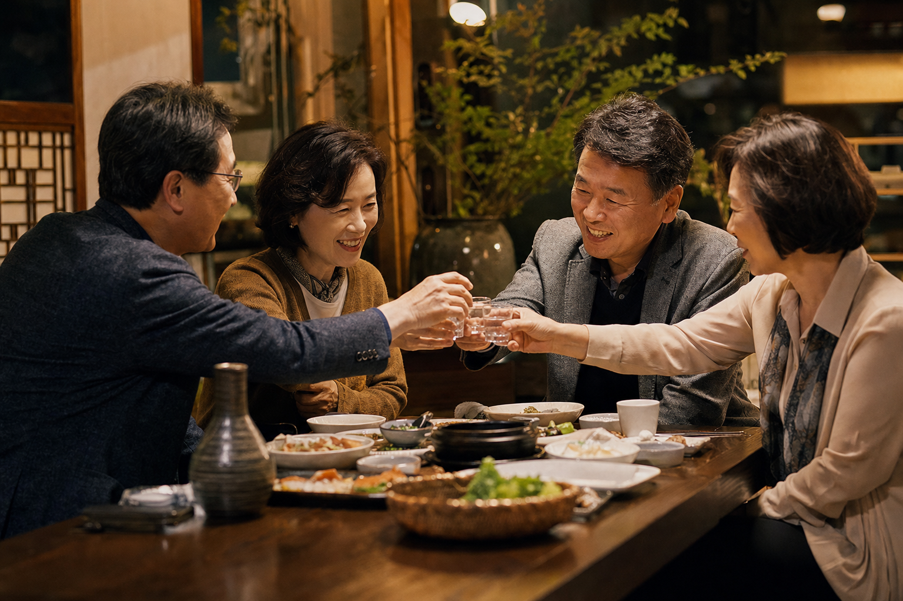
불포함 (정직 표기)
석식 1회(자유식) · 개인경비
2박 3일 · 1인 기준
비즈니스석 · 독도 · 대아리조트 2박
특식 5식 · 여행자보험 · 유류할증료 포함
시놀트립 멤버십 가입 전이라면
멤버십 바로가기 →2인 1실을 희망하시는 경우 추가요금이 발생하며, 별도 상담을 통해 안내드립니다.
연 49,900원으로,
1년 내내 시놀트립을 회원 혜택과 함께.
“여행 한두 번만 함께해도, 조식·보험 값이 가입비 이상이에요.”
조식 무료 3회는 이번 여행과 별개로, 앞으로의 시놀트립·숙박에서 사용하실 수 있어요.
멤버십 자세히 보기 →이런 분께 딱이에요
을왕리 바다 앞 1박 2일, 딱 20명.
편안하게 다녀오실 수 있도록
준비할게요.
시놀트립 · 시놀 회원 전용 소규모 여행
선착순 20명 마감 시 조기
종료될 수 있어요